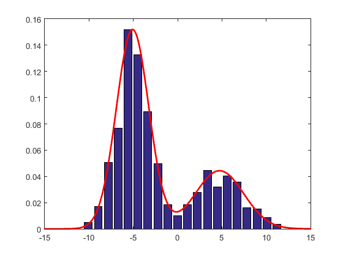

MixEst at a glance
Using MixEst, you can fit arbitrary distributions (usually mixture models) to your data set by various optimization techniques, with minimal effort.
The toolbox architecture is based on defining all the distributions in a compatible way, such that each distribution exposes a common interface for calculating things such as the log-likelihood or entropy.
Download
You can find the latest release of MixEst at our releases page on GitHub.
Install
To install MixEst, after extracting the downloaded archive, open up MATLAB and run install_mixest.m located in the extracted directory.
Note: Manopt toolbox version 1.0.7, which is required by MixEst, is included in the thirdparty directory.
A first example
The following example shows the basic usage of the toolbox:
% Generate 1000 random data points data = [randn(1,700)*2-5, randn(1,300)*3+5]; % Create a Gaussian distribution to be used % as the component of a mixture distribution ComponentD = mvnfactory(1); % Construct a mixture of two Gaussians D = mixturefactory(ComponentD, 2); % Estimate model parameters using data theta = D.estimate(data); % Plot the density along with the % normalized histogram of data x = -15:0.1:15; f = D.pdf(theta, x); [n, bins] = hist(data, 20); bar(bins, n/max(n)*max(f)) hold on plot(x, f, 'r', 'LineWidth', 2) hold off
Here is the result:

Simple, right? Let's look at the code bit by bit:
% Generate 1000 random data points
data = [randn(1,700)*2-5, randn(1,300)*3+5];
First we need some data. The first command generates some random data suitable for our demonstration and has nothing to do with our toolbox! But you can see how the data looks like from the histogram plot above.
% Create a Gaussian distribution to be used % as the component of a mixture distribution ComponentD = mvnfactory(1);
The next command, ComponentD = mvnfactory(1);, demonstrates how you create a MixEst distribution. There are some so-called "factories" available for various probability distributions, which are simply functions returning a specific structure defining a probability distribution. mvnfactory is a factory for the Multi-Variate Normal distribution, and its input argument defines its data dimensions; So the input 1, makes it a usual normal (Gaussian) distribution. Note that the distribution structures in MixEst contain only information relating to their structure. Their parameter values should be kept separately as explained below.
% Construct a mixture of two Gaussians
D = mixturefactory(ComponentD, 2);
Now, you can guess what the next command, D = mixturefactory(ComponentD, 2);, does. It creates a mixture distribution containing two components of type defined by our ComponentD, that is a mixture of two Gaussians. You can read more about this factory here. We usually name our distribution-structure variables with an upper-case D, but you may name them however you want.
% Estimate model parameters using data
theta = D.estimate(data);
Here comes the main command: theta = D.estimate(data);. This estimates the parameters of the distribution D to fit data and returns the estimated parameter structure theta. Some remarks are in order here:
- Most fields of the distribution structures, like estimate, contain function handles that you may call like D.fieldname(arguments). A list of common functions can be found here.
- The values of parameters for a distribution are kept in a structure variable (here theta). These may be created manually, or may be obtained from functions like estimate, and are required when calling distribution functions that depend on parameter values. For more information, read our documentation on distribution parameters.
- This was the most simple syntax for calling estimate. Lots of options are available as described here.
% Plot the density along with the % normalized histogram of data x = -15:0.1:15; f = D.pdf(theta, x);
The next couple of commands find the probability density function (PDF) of the mixture distribution D, over the range -15 to 15. Note that the function D.pdf requires the parameter structure theta, in addition to the points of interest.
[n, bins] = hist(data, 20); bar(bins, n/max(n)*max(f)) hold on plot(x, f, 'r', 'LineWidth', 2) hold off
The rest of the commands create the plot depicted above. We have normalized the data histogram, such that its peak is at the same level as the peak of the PDF.
A simple drill
The output of mvnfactory is a distribution structure just as the output of mixturefactory is. Make a small change in the code to fit a Gaussian to the data.
Distributions
Distributions in MixEst are represented as special structures that are obtained by calling a factory function. To create a distribution structure, you need to give only the structural information for the specific distribution to the factory function, and NOT any parameter values for the distribution. For example, to create a multi-variate normal (MVN) distribution over a two-dimensional space you can write:
D = mvnfactory(2);
The distribution structure has a number of fields, most of which contain function handles, so you can access the functions provided by the distribution easily like:
data = D.sample(theta, 1000);
This command calls the function sample from the distribution D to get 1000 random samples drawn from the distribution. theta contains the desired parameter values for the distribution. It is a simple structure with fields corresponding to each parameter of the distribution. In case of the multi-variate normal we can create the parameter structure theta like this: (before the above code)
theta.mu = [1; 2]; theta.sigma = [2 1; 3 4];
This creates a parameter structure for our MVN distribution with a mean (mu) located at [1; 2] and a covariance matrix (sigma) of [2 1; 3 4].
Parameter structures for a distribution may also be obtained by calling some function from the distribution structure. In the first example above we called estimate to obtain parameters fitted to our data. There is also a randparam function to get random parameter values:
theta = D.randparam();
You can read more about the parameter structures at our documentation on distribution parameters. Also you may read our documentation on distribution structure common members for a list of usual fields found in the distribution structures. Specific information about each built-in distribution is provided in the API reference for its factory.
Available distributions
MixEst comes with a number of implementations for commonly-used distributions. Of course, you can also define your custom distributions just like the built-in ones in order to use the facilities provided by MixEst. Feel free to take a look at the code of the factory functions and to copy and change them to suit your needs. The codes are quite easy and self-explanatory but if you would like more info, take a look at our developer guide. Be sure to let us know if you'd like to add your new distribution to future versions of the MixEst toolbox.
Here is a list of the built-in distributions:
Undefined function 'mxe_htmltable' for input arguments of type 'struct'. Error in user_guide (line 245) disp(mxe_htmltable(T))
Estimation functions
Estimation functions in MixEst provide you with algorithms to find optimized parameters that fit distributions to your data. Here we describe briefly how to work with these functions. More information about the functions is available in the API reference.
estimate
The main estimation function in MixEst employs manifold optimization algorithms (using the Manopt toolbox) to maximize the log-likelihood of the distributions on the data. It is available through the estimate field for every distribution structure:
theta = D.estimate(data, options)
The options argument is optional and may be used to customize the optimization. You can read about the options structure here. options will be passed directly to the Manopt solver, so you may set the required Manopt options in this structure.
There are also two important fields in options that you should be aware of:
- options.solver specifies the solver to use for solving the optimization problem. The default value for this option is the string 'default' which means: call the estimatedefault function of the distribution (described below) if available, or use the LBFGS solver otherwise. You can set this option to the handle of your desired Manopt solver function, or use the shorthand strings specified here.
- options.theta0 specifies the initial parameter values to start the estimation from. If you don't assign a parameter structure to this field, the init function of the distribution will be called to get theta0.
The data in MixEst is arranged in an n-by-N matrix where n is the dimensions of the data space and N is the number of observations (i.e. each column of the matrix represents a single data point). More information can be found here.
theta is the estimated parameter structure. You can find the log-likelihood with the newly estimated parameters like this:
ll = D.ll(theta, data);
estimatedefault
Most distribution structures provide a default estimation function named estimatedefault which implements the basic parameter-estimation algorithm for them over small data sizes. This function will be automatically called if you don't set an options.solver when calling estimate. But you can also call it manually:
theta = D.estimatedefault(data, options)
Information about the default estimation function for each distrbution can be found in its factory documentation.
More output
If you need more information from the estimation process, you can use the more complete call format:
[theta, D, info, options] = estimation_function(...)
D is the distribution structure for which theta is the estimated parameters. You may ignore this output for estimation functions called from a specific distribution structure.
The iterative estimation algorithms log information at each iteration about their progress and return it in the structure-array info. If you have worked with the Manopt toolbox you should be familiar with this output. As an example you can get the last execution time using info(end).time, or you can plot the cost trajectory by plot([info.cost]). Read more about the info structure array here.
The options structure is returned as the last output, so you can see what default values the estimation function has used on top of the options that you have possibly specified.
Split-and-merge estimation functions
The mixture distribution in MixEst allows for easy split, merge and partial estimations on its component distributions and is ideal for experimenting with split-and-merge algorithms. Currently the following algorithms come built-in with MixEst:
The mixture distribution
Using the factory function mixturefactory, we can create a distribution structure for working with mixture models. Here we briefly discuss some of the functionalities offered by this structure.
The basics
We can create a mixture of K Gaussians on a d-dimensional data like this:
D = mixturefactory(mvnfactory(d), K)
Mixtures of other types of distributions can be created by changing the first argument.
The parameter structure for mixture distributions contains two fields: D and p. If we name the parameter structure theta, theta.D is a cell array where each element contains the parameter structure for its respective component. For example, when the components are Gaussian, theta.D{2}.mu contains the mean value of the second component of the mixture.
theta.p is a vector containing the weights of the components. For instance, you can use theta.p(3) to get the weight for the third component.
The default estimation function for the mixture distribution implements the Expectation-Maximization (EM) algorithm. So we can use EM to fit the mixture to our data like this:
theta = D.estimatedefault(data)
And of course we might like to use gradient-based manifold optimization:
options.solver = 'lbfgs';
theta = D.estimate(data, options)
The weighting function weights the data according to the posterior probabilities:
W = D.weighting(theta, data)
W is a two-dimensional matrix with the element at (i, j) containing the posterior probability of j'th point in data with respect to the i'th mixture component.
Partial estimation
The mixture distribution also gives us the ability to estimate the parameters for a subset of its components, while fixing the parameter values that we currently have, for the other components. For example the following command fits the 2nd and 3rd components to data, while the other components are fixed where they currently are:
newtheta = D.estimatepartial([2,3], theta, data, options)
Please note that by design, the weights of the fixed components can be scaled uniformly during the estimation, using an extra global weight for the fixed components in the weight vector (theta.p).
Split and merge
The split and merge functions let us split a component or merge two components, and return the new mixture distribution structure along with its parameters. The parameters for the splitted components or the merged component in newtheta are initialized based on the settings in options.splitInit / options.mergeInit:
[newD, newtheta] = D.split(idx, theta, options) [newD, newtheta] = D.merge(idx1, idx2, theta, options)
The functions splitcandidates and mergecandidates give the n best candidates for splitting or merging based on the criterion in options.splitCriterion / options.mergeCriterion:
idx = D.splitcandidates(theta, data, options, n) [idx1, idx2] = D.mergecandidates(theta, data, options, n)
Read more
Read more about the mixture distribution at our mixturefactory documentation.
Mini-batching
You can enable mini-batching and set the size of each mini-batch to 10 examples using:
options.minibatch.size = 10;
By default, we use each mini-batch for 10 iterations, and then discard the optimization history to start with the next mini-batch. You can change these behaviors using options.minibatch.iter and options.minibatch.discardHistory respectively. For instance, stochastic gradient descent can be achieved using:
options.solver = 'gd';
options.minibatch.iter = 1;
options.minibatch.discardHistory = false;
Read more about mini-batching at our documentation on estimation options.
Cross-validation
Tell the estimation functions to use half of the data for cross-validation using the following command:
options.crossVal.fraction = 0.5;
Read more about cross-validation at our documentation on estimation options.
Penalizing the cost
The cost function used in the main estimation function is the negative log-likelihood. To prevent overfitting, you can enable penalization:
options.penalize = true;
This can be done for distributions that define a default penalization function.
Big data
The main estimation function in MixEst works within the maximum-likelihood framework and thus is suitable for large data sets. Along with the mini-batching functionality discussed above, we also provide the capability to calculate the log-likelihood for successive patches (chunks) of data and sum the results to calculate the cost. This can be enabled by setting options.dataPatchSize to the desired patch size.
If your data does not fit in the available memory, you can give the data to estimation functions, as a matlab.io.MatFile object referring to a MAT-file containing your data as a variable named data (in MATLAB versions R2011b and above).
You might also want to implement your own cost/grad function and handle the data by yourself, using options.costgrad.
Plotting and visualization
We also provide some easy-to-use options that add some visual fun to the estimation process. Take a look at the plotting and visualization options in our documentation on estimation options to find out more about these features.
Examples
Take a look at our examples to see some sample codes for working with MixEst.
API reference
See our API reference for a detailed usage information.
References
- N. Ueda, R. Nakano, Z. Ghahramani, and G. E. Hinton, “Split and Merge EM Algorithm for Improving Gaussian Mixture Density Estimates,” The Journal of VLSI Signal Processing-Systems for Signal, Image, and Video Technology, vol. 26, no. 1–2, pp. 133–140, Aug. 2000.
- B. Zhang, C. Zhang, and X. Yi, “Competitive EM algorithm for finite mixture models,” Pattern Recognition, vol. 37, no. 1, pp. 131–144, Jan. 2004.
- K. Blekas and I. E. Lagaris, “Split–Merge Incremental LEarning (SMILE) of Mixture Models,” in Artificial Neural Networks – ICANN 2007, J. M. de S?, L. A. Alexandre, W. Duch, and D. Mandic, Eds. Springer Berlin Heidelberg, 2007, pp. 291–300.
- S. Sra, R. Hosseini, L. Theis, and M. Bethge, “Data modeling with the elliptical gamma distribution,” in Proceedings of the Eighteenth International Conference on Artificial Intelligence and Statistics, 2015, pp. 903–911.